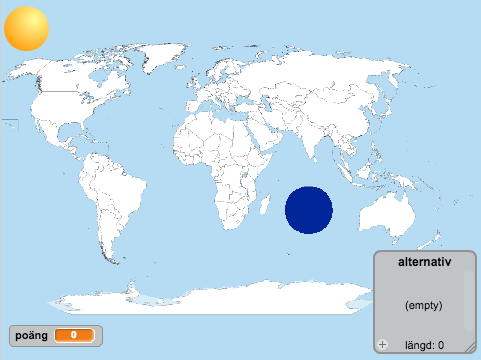
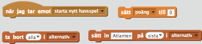
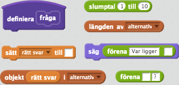
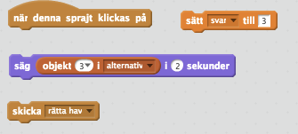
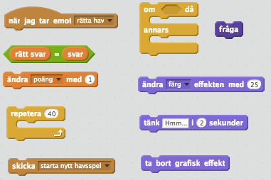
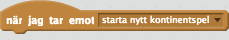

I denna uppgift ska du få skapa en prototyp till frågesport som du till exempel kan använda i skolan. Först ska du få koda ett spel som går ut på att gissa var olika hav ligger. Därefter kommer du att få utöka programmet med frågor om var olika kontinenter ligger. Även om det i detta exempel är ett geografispel, kan frågesporten också göras på helt andra teman, allt från att gissa djur till ABC-spel eller matematikfrågor! I uppgiften kommer du få använda dig av många funktioner och sprajtar.
Ett exempel på hur spelet kan se ut ser du här: https://scratch.mit.edu/projects/116509972/
Skapa ett nytt projekt och ta bort katten.
Som bakgrund behöver du en världskarta. En sådan kan du hitta genom att söka på nätet eller så kan du välja en från Wikimedia. Spara bilden på din dator och ladda upp den som bakgrund i ditt Scratch projekt.
Kan jag använda bilder som jag hittar på nätet? Om du vill använda bilder från nätet, tänk på att det måste vara en bild som du har tillåtelse att använda för personen som skapat den. De flesta bilder på nätet är upphovsrättsskyddade, vilket innebär att du inte får använda dem utan att fråga om lov först. Men det finns bilder som är ok att använda, till exempel om du söker med Creative Commons sökmotor.
Nu behöver du en knapp för att starta frågesporten. Du kan till exempel använda dig av sprajten Sport/Ball. Sätt den i ett hörn av spelplanen.
Rita en ny sprajt och gör den till en ganska liten cirkel. Det är denna sprajt som du ska klicka på för att gissa på olika hav så till att den är fylld. Dra sprajten så att den ligger i ”Indiska oceanen” på kartan.
Skapa en variabel för alla sprajter som heter ”poäng”
Skapa en lista för all sprajter som heter ”alternativ”

I förra uppgiften skapade du en knapp, Ball för att starta spelet samt variabeln "poäng" och listan "alternativ". När du klickar på knappen ska spelet börja: "poäng" ska nollställas och i listan "alternativ" ska alla svars alternativ läggas till. Det ska du få koda nu!
Skapa ett skript för sprajten Ball som säger:
Startar när sprajten klickas på
Skicka meddelandet ”starta nytt havsspel”
Skapa ett till skript för samma sprajt
Startar när den tar emot meddelandet ”starta nytt havsspel”
Sätt "poäng" till 0
Ta bort allt i listan ”alternativ”
Sätt in ”Atlanten” sist i "alternativ"
Sätt in ”Stilla havet” sist i "alternativ"
Sätt in ”Indiska oceanen” sist i "alternativ"

Det här är några av de block du behöver för punkt 8. Tänk på att vissa behöver användas mer än en gång.
Testa spelet! Läggs det till olika hav i listan när du klickar på sprajten?
Skapa en variabel som heter ”rätt svar”. Den ska inte visas på skärmen. Denna variabel ska peka på det svarsalternativ som är rätt.

Skapa ett nytt block som heter ”fråga”, och som gör följande. (Du kan skapa nya block under fliken Fler block)
Sätt ”rätt svar” till ett slumptal mellan 1 och längden på ”gissningar”
Säg ”Var ligger ” + objekt ”rätt svar” i "alternativ" + ”?”. +-tecknet här betyder att du ska sammanfoga flera olika strängar och variabler.

Se till att blocket ”fråga” körs när sprajten Ball tar emot meddelandet ”starta nytt havsspel”. Du kan lägga in blocket efter koden du skapade ovan i punkt 2.
Nu ska du göra så att du eller någon annan kan gissa på olika hav genom att klicka på hav-prickar. Du skapade en sådan sprajt ovan och det ska bli enkelt att skapa fler sådana prickar utan för mycket kod:
Du kan först skapa många sprajter och sedan koda för de olika sprajterna. Det kommer innebära att du får koda väldigt mycket.
Istället bör du koda för en sprajt och sedan kopiera. Då behöver du inte göra så mycket job.
Problemet är då hur du gör de olika sprajterna UNIKA. Till exempel så att du vet vilken som är på "Indiska oceanen" och vilken som är på "Atlanten".
Svaret är LOKALA VARIABLER. Varje sprajt har en variabel som bara de själva ser. Tänk på den som ett id-nummer. Eftersom varje sprajt har ett UNIKT id-nummer kan du känna igen dem. Fiffigt va?
Nu till kodandet:
Skapa en variabel för alla sprajter som heter ”svar”. Den ska inte visas på skärmen.
Skapa ett skript i sprajten Sprajt1 (cirkeln du ritade) som säger:
Startar när den klickas på
Sätt "svar” till 3
Skickar meddelandet ”rätta hav”
Säg objekt 3 i ”alternativ” i 2 sekunder.

Du använder dig av 3 här eftersom pricken är placerad i Indiska oceanen och det är den plats i listan som just det här havet har. Det är i allmänhet inte bra att använda sig av siffror på det här sättet. Och det blir krångligt när du ska kopiera sprajten. Till exempel behöver du byta ut 3:an på flera ställen. Därför ska du ersätta 3:an med en LOKAL VARIABEL som bara finns för denna sprajt. Den kommer att fungera som ett id-nummer för sprajten.

Skapa en variabel för Sprajt1 som heter ”id”. Var noga med att skapa denna variabel enbart för denna sprajt.
Skapa ett skript för Sprajt1 som säger:
Startar när START klickas på
Sätt ”id” till 3
Ändra i det skriptet som du skapade i punkt 2 ovan så att 3:an byts ut mot variabeln ”id”.
INTE
Nu kan du skapa fler prickar! Eftersom du har använder "id" som är UNIK för varje sprajt kan du lätt känna igen dem.
Kopiera Sprajt1 och placera kopian på Atlanten i kartan.
Ändra skriptet som sätter ”id” så att värdet i stället blir 1. Nu har den sprajten ett annat id-nummer än pricken i Indiska oceanen.
Repetera punkterna 6 och 7 men placera den tredje pricken i Stilla havet och sätt ”id” till 2.
Vad händer nu om du klickar på de olika prickarna? Visar de rätt namn?
Nu fattas bara att du kontrollerar så att spelaren klickar på rätt prick.
Skapa ett skript i Ball som säger
Startar när den tar emot meddelandet ”rätta hav”
Om "svar" = "rätt svar" då:
Öka "poäng" med 1
fråga (det här blocket skapade du tidigare)
Annars:
Tänk "Tyvärr det var fel. Ny fråga kommer snart...” i 2 sekunder
Skicka meddelandet ”starta nytt havsspel”
Nu ska du ha en första fungerande version av spelet. Testa! Ökar poängen om du gissar på rätt hav? Nollställs poängen om du gissar fel?
Lägg till ny kod efter att du ändrat poäng med 1:
Repetera 40 gånger: Ändra färg effekten med 25
Ta bort grafiska effekten
Nu har du lagt till en liten färganimation som visas om du gissar rätt.

Nu ska du få utöka programmet med ett spel som går ut på att gissa kontinenter. Du kommer att kopiera mycket kod från sprajtar du redan kodat. Detta är något programmerare gör ofta eftersom det är enklare än att skapa samma kod igen.
Kopiera sprajten Ball och placera den i ett annat hörn. Välja en annan klädsel för den nya sprajten så att den ser annorlunda ut.
Tips: Om du vill kan du använda textverktyget och skriva "H" och "K" på de olika knapparna så att de är lättare att förstå.
Ändra i den nya sprajten Ball2 så att den skickar meddelandet ”starta nytt kontinentspel” i stället för ”starta nytt havsspel” när den klickas på.
Ändra också på andra stället så att den kör kod när den tar emot ”starta nytt kontinentspel”.
 INTE 
Ta bort insättningarna av haven i listan och sätt istället in dessa 6 kontinenter
Afrika
Eurasien
Nordamerika
Sydamerika
Australien
Antarktis
Ändra så att den kör kod för att rätta spelet när den tar emot meddelandet ”rätta kontinent” istället för ”rätta hav”.
Nu ska bollen fungera. Vad händer om du klickar på den? Frågar den efter en kontinent?
Nästa steg är att lägga till prickar för de olika kontinenterna.
Kopiera en av hav-prickarna. Rita om klädseln så att den har en annan färg.
Ändra ”rätta hav” till ”rätta kontinent” så att rätt meddelandet skickas
Kopiera denna prick 5 gånger och placera ut dem på de olika kontinenterna
Ändra i skripten för de olika prickarna så att den lokala variabeln ”id” sätts till rätt siffra.
Grattis, nu har du gjort klart uppgiften.
Glöm inte att spara ditt projekt! Döp det gärna till uppgiftens namn så att du enkelt kan hitta den igen.
Testa ditt projekt
Visa gärna någon det som du har gjort och låt dem testa. Tryck på DELA för att andra ska kunna hitta spelet på Scratch. Gå ut till projektsidan och låt någon annan testa spelet!
Det är väldigt många prickar på spelplanen. Det vore bra om hav-prickarna försvinner när du gissar på kontinent och att kontinent-prickarna försvinner när du gissar på hav. Kan du fixa det?
Nu förlorar du genast alla poäng om du gissar fel. Ett alternativ är att du får fler chanser. Kan du koda det?
Tips: Ändra i koden för Ball som körs när den tar emot meddelandet "rätta hav".
En annan idé är att hålla reda på vilka hav eller kontinenter användaren har gissat på. Då får spelaren bara en chans per hav eller kontinent och så avslutas spelet när hen har gissat på alla. Du kan till exempel avsluta med meddelandet "Du klarade 2 av 3 hav"!
Tips: Använd en lista för att spara vilka värden variabeln "rätt svar" har haft. Då kan du se till att dessa inte slumpas fram igen genom att använda ett "innerhåller"-block.
Du kan till exempel lägga till ett spel går ut på att gissa länder.
Vad är en lokal variabel?
Vad kan du använda en lokal variabel till?
Varför kan det vara bra att skapa ett nytt block?